曹德旺
曹德旺拥有双重平衡的身份。
天平的一端，他是中国顶尖的企业家，把一块玻璃做到极致。他的公司“福耀玻璃”占据中国70%的汽车玻璃市场，在全球汽车玻璃行业，占比高达25%。
在被誉为全球企业界“奥斯卡”的“永安全球企业家大奖”名单中，他是唯一获奖的中国人。
天平的另一端，从1983年到2019年，曹德旺已捐出个人资产超过110亿元，用于慈善事业。是中国慈善捐款数最多的人。
散财无数的他，在2019年福布斯富豪排行榜上，仅以147.1亿人民币的财富，排名第163位。
敢说敢言，崇尚“爱拼才会赢”、“做人做事讲良心 ”，自称“有种的中国人”，觉得自己一辈子最牛逼的是“没给官员送过一块月饼”。
这就是曹德旺，一个值得敬佩的中国企业家。
曹德旺最近做了两件大事。
年底，武汉疫情暴发，曹德旺心急如焚。他积极跟武汉相关人员联系，捐出1个亿的善款。其中7000万支援湖北省防疫工作，3000万元支持他所在的福建省。
捐款之后，他又听闻到湖北缺物资，口罩、防护服、消毒液等均供应不足。
于是，曹德旺紧急动员海外公司购买相关物资。七凑八凑，等到2月20日，他筹集到价值1000万的防疫物资，捐给武汉。
同时，看到封城之后，中小企业经营困难，他又捐出4000万帮助抗击疫情和助力小微企业发展。
另一件大事是，以他为主线的纪录片《美国工厂》，在2月10日奥斯卡颁奖典礼上，拿下最佳纪录片奖。
这部美国前总统奥巴马担任监制的纪录片，用朴实的镜头，记录了曹德旺在美国开设玻璃生产厂期间，因文化差异与制度差异，引发的一系列冲突。
该片在国内视频网站播出之后，引起商业界的广泛讨论，褒贬不一，曹德旺却说：
“我这个人的性格，光明磊落，我跟他讲，我敢做的你都可以拍，被你拍到你都可以播。
我很自豪地跟你讲我一辈子走过来，光明磊落。”
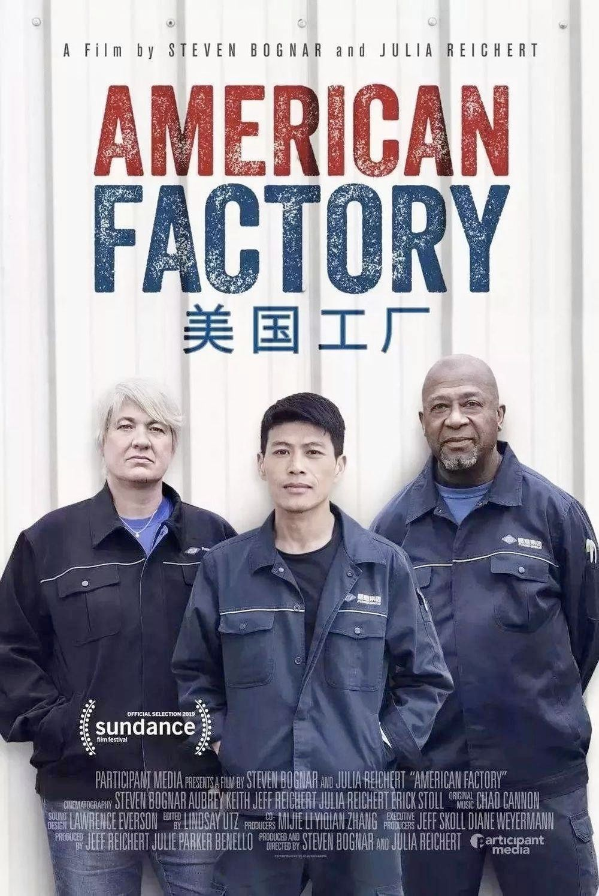导演史蒂文·博格纳尔、朱莉娅·赖克特在颁奖典礼上，用中文对曹德旺表达感谢，尤其是他的坦诚和公开。
曹德旺也在颁奖当天，及时回应对方：
“电影出来后，我很认真地看了三遍。我知道，你们用自己的手法，也没少批评我，但我还是感谢你们，我会很客观地接受你们的批评。”
礼貌克制，接受批评和赞美，今年74岁的曹德旺，展现出了中国第一代企业家的风骨。
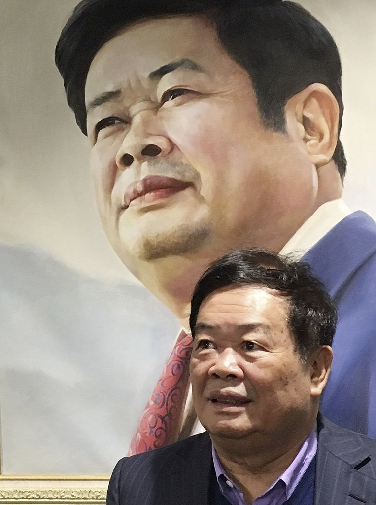1、有种的中国人
1、有种的中国人
今年74岁的曹德旺向来说话耿直，快人快语。
无论接受采访还是演讲，他最骄傲的是：“几十年来，我在十几个省办厂，从没有向任何官员和银行送过一盒月饼，以人格做事。”
坚守底线、规矩，从不铤而走险牟取私利，这是曹德旺的人格。
因为快人快语，曹德旺的诸多言论，也不免树敌。
他似乎早就想好了结局：
“我如果犯规，会死得很惨，所以我看见谁都怕，做事很谨慎。我把自己置于全社会监督之下，尊重各种法律法规以及风俗习惯。
因此我就不会犯规。我没丢下什么把柄，所以也没什么好捡的。在刀刃上平安行走30年，我也很佩服我自己。
我就知道我是怎么个死法。就是病死老死的呗。 ”
不犯规、不苟且是曹德旺一直坚守的底线，另一条底线是，坚守“实业报国”。
早年间因进口汽车玻璃价格昂贵，他愤愤不平创业，由此忍辱负重：“要为中国做一片自己的汽车玻璃，让所有的中国人都能用上。”
近40年的时间，他完成了当初的愿望，个人财富也随之攀升。
当财富积累到一定程度，从事更“轻松赚钱”的方式是大多数人的选择，但曹德旺不同。
他不做房地产、不开矿、不做娱乐业。在他心里，制造业的崛起才能真正带动国家进步。
因此，有人说他迂腐，也有人说他短见，曹德旺却统统反驳。
曾在接受记者采访的时候，他大骂开发商太贪心：
“开发商太贪心，中国有大部分资金都涌入到了地产行业，这对于实体产业的影响是非常大的。
中国目前根本不缺房子，各地房屋空置率非常高，但是开发商仍然乐此不疲地建造新房子。
这些开发商拿着从银行借来的钱，很快就能赚取几倍甚至十几倍的利润。”
同时，他更为一针见血地分析到：“有钱的人都几套房子，剩下需要房子的人才没有钱。”
甚至疫情期间，负债率颇高的房企引发人们的担忧，不少人呼吁拯救房地产行业，但曹德旺却说：
“总是要拯救开发商、拯救楼市，为什么不去拯救那些买不起房的人呢？”
“君子有所为，有所不为。”这是曹德旺的经营哲学。
如果仅仅是遵循人格，坚守底线，曹德旺似乎还不足以赢得人们的尊重。
他真正出色的地方在于：率领中国企业走出中国，在更为广袤的商业世界里纵横厮杀。
上世纪九十年代，他开始出口汽车玻璃。依靠过硬的质量和低廉的价格，福耀玻璃很快享誉全球。
有人赚钱就自然有人眼红。2001年，美国商务部以“福耀玻璃在美国低于公平价值销售，对美国的产业造成实质伤害”为由，强行提高福耀玻璃的关税。
事件爆发之后，两种激烈的观点在曹德旺身边争执。
一种认为，福耀在国内供不应求，为了不惹麻烦可以放弃美国市场。
而另一种认为，如果一旦放弃美国市场，将会致使公司彻底退出国际市场。
曹德旺并没有站在企业盈利或亏损的角度思考，他对董事会成员说：中国企业在美国合理合法经营，不应被美国的行政手段打败。
“一旦放弃，我们丢掉的不是‘国际市场’四个字，更是企业应承担的维护国家尊严的责任。”
甚至说到动情处，他拍着桌子近乎嘶吼：“我们有种的中国人，应该团结起来，克服困难。”
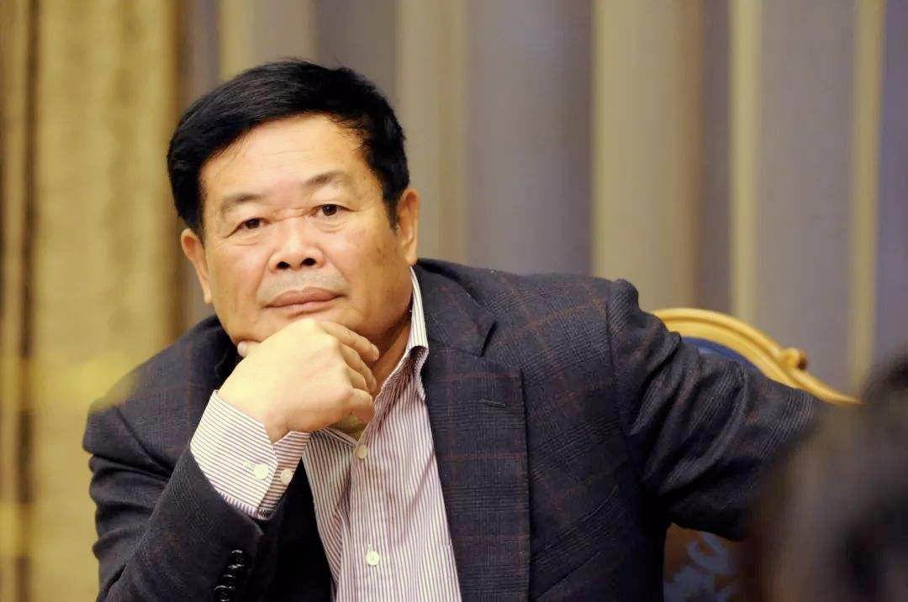随后第一时间，曹德旺开始筹集证据，组织律师向美国国际贸易法院，状告美国商务部。
一位参与当时曹德旺反倾销小组的成员回忆：“曹德旺陪伴他们没有白天，没有黑夜，吃在办公室，睡在办公室，整理的资料和数据起码有半吨，可以堆满一个房间。”
整整3年的时间，曹德旺先后付出超过1亿美元的代价，坚持上诉，“即使输了也是赢。要告诉全世界，他们是如何的不公平”。
最终，他们打赢了这场反倾销战争。
这是中国加入WTO之后的第一个反倾销胜诉案例，也鼓舞了越来越多中国企业，与不合理的美国行政权作斗争。
一个细节是，2006年美国商务部部长访问中国时，点名约见曹德旺。
敢说敢言，一颗红心，曹德旺一直坚守内心的认知。
在获得永安国际大奖时，他在颁奖典礼现场，高举着中国国旗大声说道：我是代表中国人来领这个奖的。
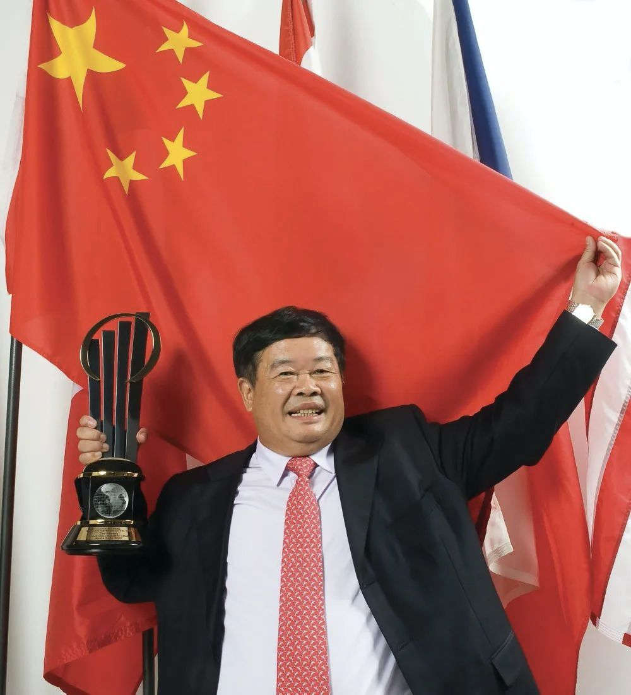2、灾难般的童年
2、灾难般的童年
很多人都曾疑问，曹德旺一个连小学都没读完的人，为何拥有如此强大的心智和能力。答案埋在他的成长历程里。
他拥有一个堪称灾难般的童年。
他的曾祖父曾是福建首富，父亲留学日本，回国后前往上海做生意。
1947年，解放战争爆发，曹德旺的父亲决定带着家人返回福建老家。但不幸的是，装着全家财产的货船，在海上遭遇风暴沉没。曹家从此一落千丈。
童年留给曹德旺最深刻的记忆是吃不饱饭。“一天只吃两顿稀饭，还要听从母亲的教诲，出门要保持微笑，不能喊饿。”
不仅饿，他每天还要从事繁重的劳动，早上捡柴、挑水，白天放牛，傍晚帮舅舅种地。忙碌、劳累、饥饿充斥着他的童年生活。
曹德旺却没有忘记读书。
他割了一年多的马草，攒下8毛钱买来《字典》，又割三年马草，买来3块钱的《辞海》。借着这两本书，他几乎把村里所有印字的纸读了一遍。
即便小学辍学，文化水平不高，但依靠自学，他仍旧在日后一笔一笔地写出了自传《心若菩提》，豆瓣评分9.1分。
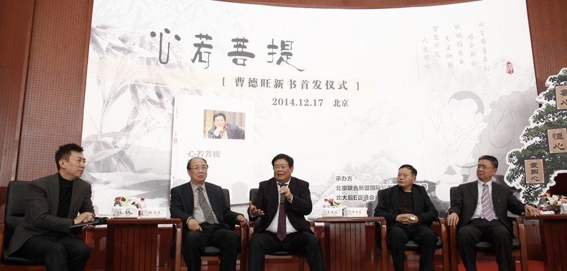长到十几岁，按照当地习俗，曹德旺依从父母之命早早结婚。
婚后，他主动向母亲提出要独立生活。妻子为了支持她，将所有嫁妆卖掉，凑钱帮助他种植白木耳。
他不仅自己种，同时将村里的白木耳转运到江西，足足赚到3000元，这在当时是一笔巨款。
曹德旺尝到甜头，但很快因为“投机倒把”被没收了全部财产，还因拖欠了村里的工分，被送去修水库。
那时被生活逼到死角的他，将妻子陈凤英和孩子送到了岳母家，并对岳母说：“我这一去，如果没有赚到什么钱，就不回来了，您让凤英改嫁吧。”
但他没想到的是，本以为是绝境，曹德旺却凭着一股子倔强，成为了他人生的转机。
他到在水库拉板车的第三天，工地上营房着了火。
重新开工的时候，营长和教导员被民工围住，因为板车损坏，有的在闹着要赔偿，有的为了尽早回家吵着要板车。
曹德旺却悄悄挤到营长面前说：“我会修车，是否让我帮您？”
随后的整整28天，曹德旺没有离开过修车棚一步。他没刮过胡子，也没刷过牙、洗过澡，出色完成任务。
最终，在工地清算补偿时，领导为了感谢曹德旺，赔偿给了他价值一千多元钱的粮票和布票。
也是在这位领导的帮助下，当初因“投机倒把”被没收的财产失而复得。
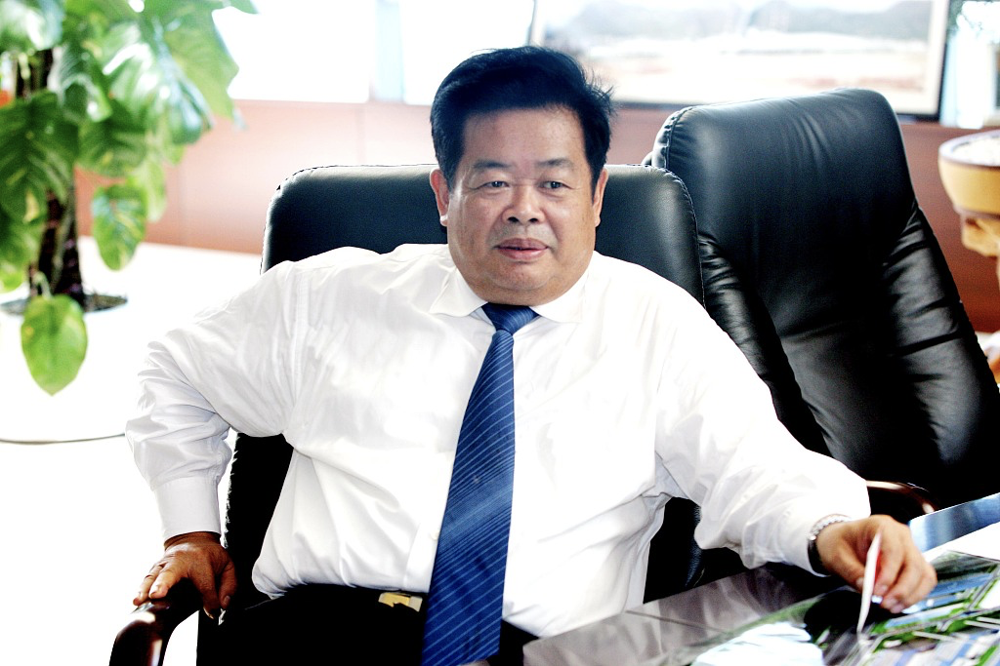3、爱拼才会赢
3、爱拼才会赢
二十几岁，迫于生计的曹德旺想过无数种方式，在街头卖过烟丝、贩过水果、拉过板车、修过自行车……却始终没能赚到钱。
经年累月食不果腹，曹德旺在歧视者的白眼下艰难谋生。几乎尝遍了常人难以想象的艰辛。
但他并未逆来顺受，而是抱着“爱拼才会赢”的心态，不断地和命运展开殊死搏斗。
1976年，曹德旺30岁了，几乎一事无成。但他敏锐地发现了当时水表玻璃的商机，于是向镇政府提议建厂。意见被采纳，曹德旺成为了玻璃场的物资采购员。
那些年，他利用采购员的身份，在福建四处奔走，长了不少见识，同时也为日后真正的创业打下基础。
1983年，玻璃厂因为经营不善濒临破产。当年10月，曹德旺却意外地决定承包这个破旧的玻璃厂，一年的时间，通过改革，他赚到了20万元。
也是从此，他开始和玻璃结缘，但此时的他还没有意识到，一个偶然的意外，会再次改变他的一生。
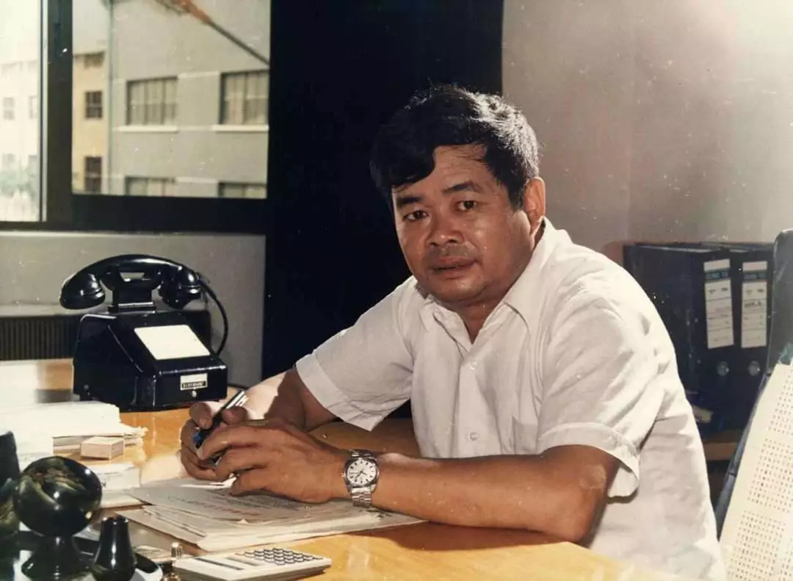1984年，曹德旺前往武夷山游玩，为了方便登山，他买了一根拐杖。但下山坐车时，司机却对他说了这样一句话：
“你把你的拐杖拿好，万一把车玻璃碰碎了，你可赔不起。”
一直跟玻璃打交道他的反问：“不就一块玻璃么，我是做玻璃的，还会赔不起？”
司机没好气的地说：“就这一块前挡风玻璃，好几千！”
曹德旺心里一惊，在追问为什么这么贵时，司机告诉他，汽车玻璃都是进口的，中国还不能自己生产。
回到家乡后，他前往汽车修理店询问，一块前挡风玻璃的价格当时在6000元，而经过他快速的计算，生产这样一块玻璃，成本仅仅在几十块钱。
回去之后，他决定进入汽车玻璃生产制造行业。此后曹德旺将所有精力和财力，全部投入到了汽车玻璃上，并起名福耀玻璃。
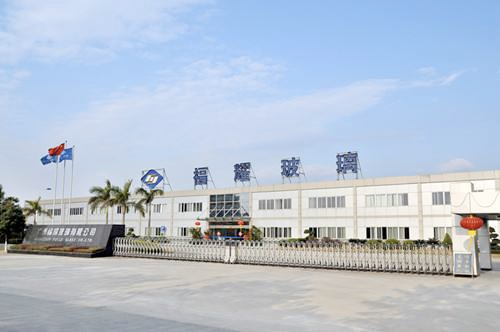其实曹德旺知道，当时国内没有汽车玻璃，一是因为国内汽车生产线本身就少，另外是因为技术达不到。
决定干，曹德旺就要干出点成绩来。
他花高价从上海买了一张旧设计图纸，按照图纸采购设备。和几十个工人几乎连轴转，研究了整整8个月，才弄明白如何生产。
生产出玻璃，还不是最重要的，最重要的是玻璃的安全性。
第一批产品下线，曹德旺花了1万多元组织了一场产品鉴定会，邀请全国专家前来检测，一旦发现质量不达标，立即整改。
从决定进入，到真正生产出合格产品，曹德旺整整忙了一年。卖出第一批合格产品后，曹德旺激动地泪流不止。
付出得到了回报，他靠玻璃很快赚到了500万，成为当地明星企业，当时有人评价他，“那不是在做玻璃，而是在印钞票”。
那一年，曹德旺40岁。
这段艰辛的经历一直印在曹德旺的脑海里。1989年中国台湾歌王叶启田发布新歌《爱拼才会赢》，快速火遍大江南北。
歌中赞美了闽南人拼搏进取、热衷打拼的性格，也鼓励了一批又一批闽南人即便失意，仍要抱定信心，努力奋斗。
当时小有成就的福建人曹德旺，很喜欢这首歌，数次听到流泪，直到今天仍旧时常哼唱。
4、中国首善
4、中国首善
创业近四十年，曹德旺积累了巨大的个人财富，但他却认为，财富不一定是好事。
“钱多了是身上的赘肉，要减肥，消除赘肉。”所以，他选择用自己的方式回报社会：
1，从不行贿，全额交税！仅2011-2016年，福耀就纳税近90亿元，占净利润7成。
2，把财富给到最需要帮助的人，希望惠及更多贫苦的人。
做慈善是他一直的坚守。年轻时他饱尝生活的苦辣，也深知底层百姓的艰辛。
做水表玻璃场盈利之后，他便捐款筹建了村里的小学。
他说慈善是培养人的思想境界，“你长得太高了锯一点下来”。
1998年暴发洪灾，他亲自飞往洪灾区考察，随即个人捐款300万元。几个月后，为了支援灾区建设，他再捐200万。
2008年汶川地震，曹德旺看到灾区情况更是心急如焚，多次飞赴汶川，先后捐款2000万元。2年后的玉树地震同样如此。
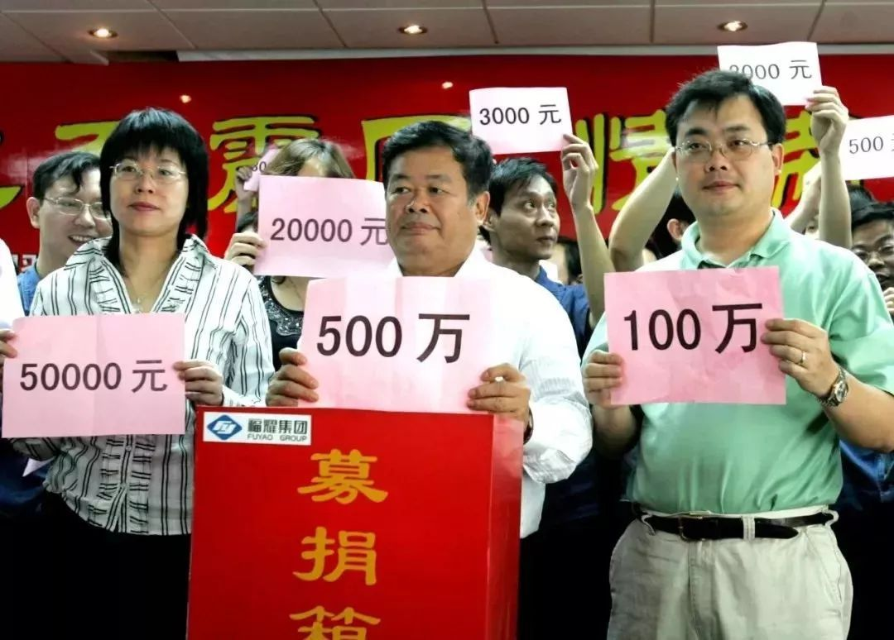贫困儿童上学问题、乡村老年福利院、大型自然灾害……他统统捐款，仅仅2010年1年，他就捐出12亿元。
次年他开始筹划自己的河仁公益基金会，将3亿股福耀玻璃股份捐赠出来。过户当天价值35.49亿元。
当年胡润富豪榜发布慈善榜，曹德旺以45.8亿元的捐赠额，成为“中国首善”。
谈及捐款数十亿，曹德旺说，拥有财富，也是背负责任。捐了，卸下重担，反而一身轻松。
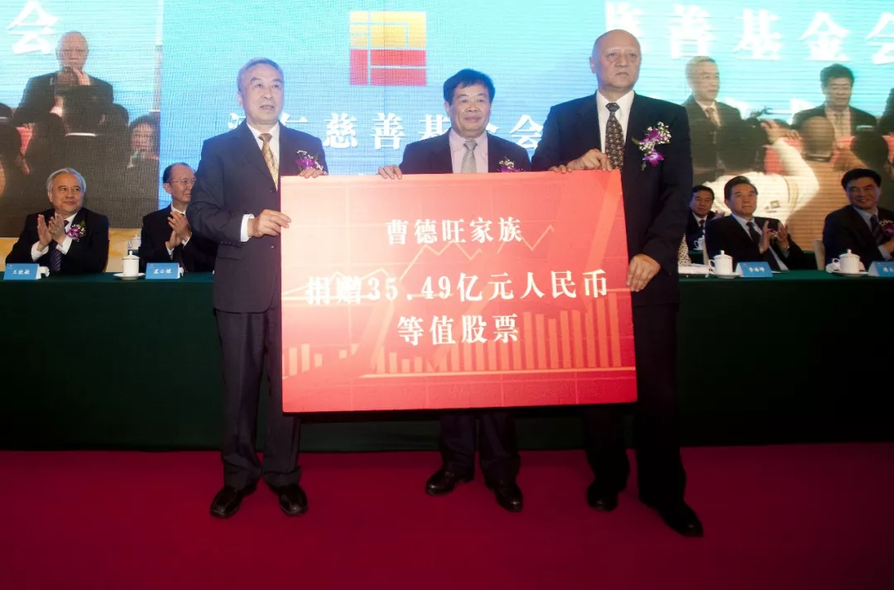用菩萨心肠行善，用霹雳手段管钱，散财无数的曹德旺还开创了中国捐赠者对公益捐款问责的先河。
2010年，面对西南灾害，曹德旺捐出2个亿。捐赠会上，曹德旺动情地说：“百年一遇的特大旱灾，老百姓生活很苦，我知道那种滋味。”
数额巨大，他对每一分钱也都精打细算，对捐款的每一个环节都保持高度警戒。用他的话说：“该花一万花一万，该省一分省一分。”
几乎每一次捐款，他都要确保捐出去的钱发到应该收到钱的人手中，而不是“雁过拔毛，层层拦截”。
他的捐款协议条件要求十分苛刻，“差错率不能超过1%，管理费不能超过善款的3%”。
同时他也为自己的捐款成立了专门的监督委员会，邀请媒体全程监督，并且每10天向自己递交项目进展报告。
据相关消息，从1983年到2019年，曹德旺已捐出个人资产超过110亿元（其中现金二十五亿元人民币），用于慈善事业。
捐款，曹德旺不是作秀，他希望能够真正帮助到那些应该得到帮助的人。
5、敬天爱人
5、敬天爱人
今年，曹德旺已经74岁了。在大多数人已经退休的年纪里，他仍旧保持着旺盛的精力。
他每天工作16个小时，没有休息日。每天早上四五点钟起来，晚上十二点睡觉，“连生病都没时间”。
“这么多年来，我都是昏天黑地过日子，没有看过一次电影，没有休过一次周末。”他为这种几乎变态的拼搏精神自豪，“为什么要扎根在这么苦的制造业？因为这是我的责任。”
他请书法家写了副对联挂在自己的办公室里：“战战兢兢即生时不忘地狱，坦坦荡荡虽逆境亦畅天怀。”
同时，也像老一辈企业家一样，曹德旺拥有着独特的家国情怀。
在民族大义之外，曹德旺也有忠贞不渝的丈夫情怀。
几年前，曹德旺的三个孩子都拿到了美国绿卡，拥有美国永久居住权。曹德旺知道后，把子女叫到身边说：
“我们不能移民，如果我们曹家移民，中国人就没有玻璃了。”
甚至严重警告三个子女：“谁要是不退美国绿卡，就无法继承我的财产。”
他的身上始终有一种从内而外对祖国的热爱和维护。折射到家庭中亦是如此。
年轻时，曹德旺第一次创业，妻子将所有首饰变卖支持。40多年过去，曹德旺始终如一，并将所有的财产转移到妻子名下。
他说：“我老婆人很好，几十年来，煮饭，帮我带小孩，永远无条件地信任我，为我奉献了很多很多。”
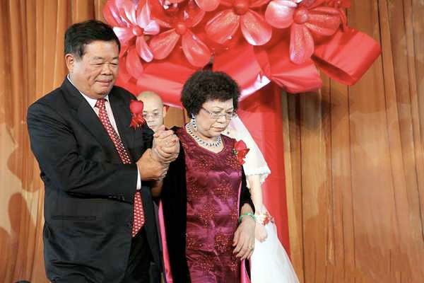直到如今，很多人仍旧被曹德旺取得的商业成就震撼，希望窥探这个传奇企业家的经营之道。
但每每接受采访，曹德旺提起最多的，却是“佛道”。
在他硕大的办公室里，最醒目的位置上，他让人摆放了一本巨大的《金刚经》。
另一本同样大小的《金刚经》，放置在他家门中央，每一位进出家门的人都能看到。
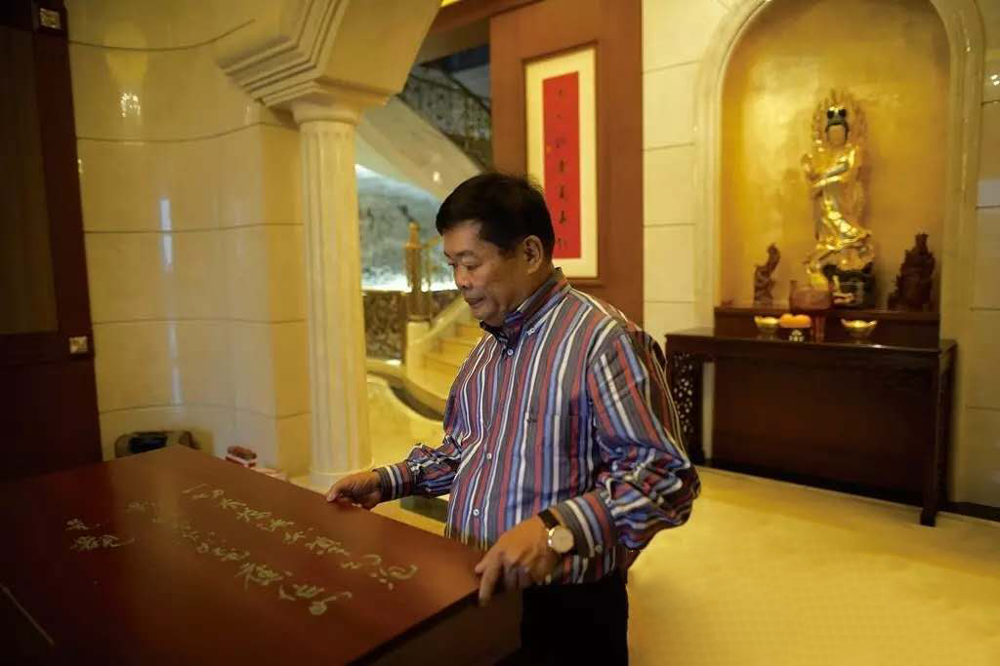他全部的兴趣都集中在两件事上：做事，带领福耀冲进商业世界里厮杀；做人，放下执念修心参佛，坚守做人的规矩。
慈善事业是他修心的一部分。“你问我做慈善是什么？那是在修行，在修做人的规矩。”
经商40年，他既不渴望成为风口浪尖上的弄潮儿，也不希望公司投机赚取快钱。他说：
“企业家必须要有这样的境界和情怀：国家会因为有你而强大，社会会因为有你而进步，人民会因为有你而富足。”
多年来评价自己，他始终都是一句话：“我没什么本事，就是死心塌地做制造业。”
死心塌地的背后，是中国第一代企业家的格局和修养。
至于经商之道，他只说了四个字：
敬天爱人。
原文作者: 余昌盛
原文链接: http://yoursite.com/2020/03/30/曹德旺/
版权声明: 转载请注明出处(必须保留作者署名及链接)